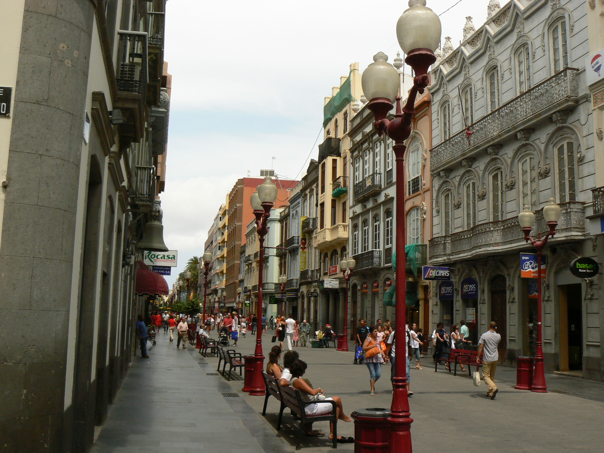

What's new?
22

Promoted quest in
Triana
The district of Triana, together with Vegueta is one of the oldest
districts of the city. The Triana quarter is far more bourgeoisie as
mainly local, Andalusian, English, Maltese and Danish merchant families
settled in this area. This also explains why the main street which crosses
the whole district displays the fashionable architectural styles of the
18th, 19th and 20th century. In spite of a stretch of modern houses at the
beginning of the Calle Triana, the entire street was declared a national historic monument.